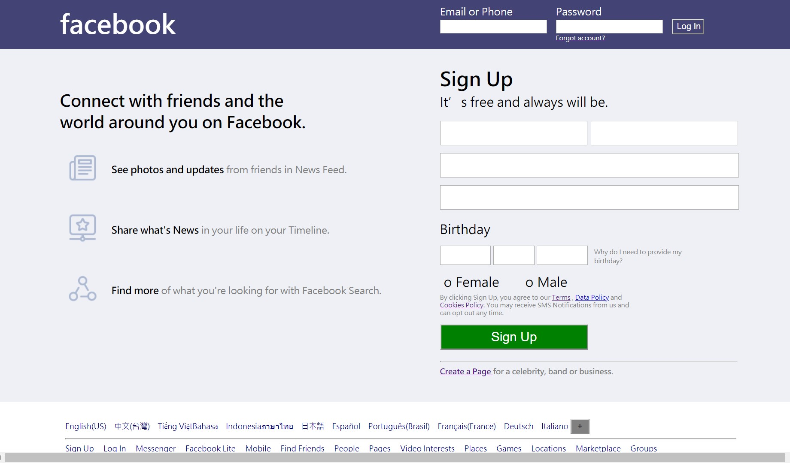

嗨! 我是Sam。
喜歡單車旅行，投身於廣闊的山林間; 傾向理性思考，欣賞歷史敘事和程式語言; 愛好電影繪畫，它們讓我貼近美與真實。
期盼兼具理性與感性，從容不迫地遊走世界。
喜歡單車旅行，投身於廣闊的山林間; 傾向理性思考，欣賞歷史敘事和程式語言; 愛好電影繪畫，它們讓我貼近美與真實。
期盼兼具理性與感性，從容不迫地遊走世界。

基本資料
姓名：謝佩珊⽣⽇：1986
性別：⼥
信箱：cigaga@gmail.com
學 歷
學⼠／國⽴臺灣師範⼤學 歷史學系 2004.09 - 2009.06
經 歷
*⼤型活動企劃與執⾏
*活動粉專經營與宣傳
*⾃主學習計畫輔導與監督
數位編輯／故事：寫給所有⼈的歷史 2015.02 – 2015.06
*活動粉專經營與宣傳
*⾃主學習計畫輔導與監督
*協助對外邀稿及活動邀約
*線上⽂章轉載與編輯
數位資料庫助理／中央研究院近代史研究所 2010.06 - 2015.01
*線上⽂章轉載與編輯
*資料收集、整理與校對
*資料庫內容、HTML 標籤製作
*資料庫內容、HTML 標籤製作
專 長
⼤型國際會議／論壇（籌備辦理）
實體展演（規劃執行）
口述歷史訪談與撰寫
旅遊規劃及導覽
其他技能
程式語言(Python, JavaScript)
外語領隊（英語領隊執照）
單車嚮導


2017 臺⼤ X 報導者：⼩⽥野計畫
2017年，臺大希望計畫與新媒體《報導者》合作，
鼓勵臺大學生踏出校園，實際走訪各個地區、深入接觸不同階層，
運用文字與影像記錄他們對社會、對生活、對人群的想法與關心。
並於期末公開展出學生豐碩的報導成果、與相關議題的非營利組織合作，
希望藉此機會讓更多人看見社會上需要關注的族群和議題，
同時發揚臺大人關心社會、關懷人群、追求理想的精神。


2016 NTU Forum：Learning How to Learn／Barbara Oakley
Coursera 百萬名師 Dr. Barbara Oakley 親臨台大。
現場湧入了超過 400 位聽眾，全都為一睹名師風采。
Barbara Oakley 以生動的語言和手勢，將神經科學、認知心理學和教育學融會運用，
解釋大腦如何吸收和處理信息，從而使我們成為更好的教學者與學習者。
本場演講成果豐碩，獲得廣泛回響，登上了《天下雜誌》和《中國時報》。


2016 Future Faculty Talk: Challenge of Academia／林夏如
2016 年 7 月，前高盛集團亞洲合夥人、現任香港中文大學教授 林夏如女士應教學發展中心邀請，
特地前來與臺大教師、研究生分享她對學術圈現況的看法。
林教授先談自己從商界轉入學界的心路歷程，再分析歐美學界與台灣學界當前面臨的挑戰，
並提出她認為可行的解決方案。


2016 你的新媒體學伴：故事 X 泛科學 X 阿滴英⽂ X 臺灣吧
網路已然是學習的重要管道，個人數位經營也成為不可不學的技巧。
2016年底，我們邀請火紅的英文教學 Youtuber〈阿滴英文〉、人氣動畫公司〈臺灣吧〉、
新銳科學媒體〈泛科學〉、深度歷史網站〈故事：寫給所有人的歷史〉等等。
結合時下學生興趣所在的主題，新媒體講座場場爆滿，見證數位時代知識網紅的魅力。


單 車
我熱愛騎單車，覺得這是遊歷世界最好的方式。
曾經自己去環島，歷經11天，騎了1100公里。
這趟旅行不僅讓我好好看了一遍臺灣，
也使我更加了解自己，知道自己的極限在哪裡，最重視的事物是甚麼。
關於單車，我有兩件想完成的事。一是海外單車旅行（北海道、紐西蘭、冰島）； 二是期盼未來能創建以女性車友為主的單車平台， 讓愛騎車的女生能選擇適合自己體力和喜好的路線，同時找到可以一起安心騎車的夥伴。
關於單車，我有兩件想完成的事。一是海外單車旅行（北海道、紐西蘭、冰島）； 二是期盼未來能創建以女性車友為主的單車平台， 讓愛騎車的女生能選擇適合自己體力和喜好的路線，同時找到可以一起安心騎車的夥伴。


程式語言
自從一年前接觸了Python，從此打開全新的視野和可能性。
過去由於工作上經常需要辦理各式活動，我的思考模式偏向一個圓盤， 需要面面俱到、周延考慮一切因素。
程式語言的思考卻是一條直線，一路往下推論、此路不通走他路，我很欣賞這種簡潔明快的邏輯。 對我而言，這不僅是一項新工具，更是一種處理事情的的新思維。 選擇適合自己體力和喜好的路線，同時找到可以一起安心騎車的夥伴。
過去由於工作上經常需要辦理各式活動，我的思考模式偏向一個圓盤， 需要面面俱到、周延考慮一切因素。
程式語言的思考卻是一條直線，一路往下推論、此路不通走他路，我很欣賞這種簡潔明快的邏輯。 對我而言，這不僅是一項新工具，更是一種處理事情的的新思維。 選擇適合自己體力和喜好的路線，同時找到可以一起安心騎車的夥伴。

自助旅行
我喜歡自己旅行。
近幾年一個人去澳洲、美西以及紐約，喜歡澳洲的開闊質樸、加州陽光和優勝美地的壯闊，
也震撼於紐約的都會叢林與當代人文藝術薈萃。
"World is the way home"
每次獨自出走，看遍世界的美麗與繁盛、遇見不同的人群與文化， 都讓我變得更加寬闊包容，也讓我更感到自己故鄉的可愛之處。
"World is the way home"
每次獨自出走，看遍世界的美麗與繁盛、遇見不同的人群與文化， 都讓我變得更加寬闊包容，也讓我更感到自己故鄉的可愛之處。


西方藝術史
大學時因為科系關係，接觸到藝術史相關課程。
西方藝術有一套嚴謹的理論發展和風格脈絡，
與當時的社會、科學、宗教、文化等方面習習相關，
在研讀時不只需要感性的體悟，更需要清楚的邏輯推論和批判能力，
這種美感與理性兼具的特質很吸引我。
圖片依序為：
Édouard Manet- "A Bar at the Folies Bergere"
Rembrandt Harmenszoon van Rijn- "De Nachtwacht"
Paul Cézanne- "Mont Sainte-Victoire"
(點圖看作品說明)
這個部落格記錄我從 2018 年初開始學習程式語言的歷程，
包括學習資源的收集、學習的方式（線上或實體），
刷題庫的心得和一些巧妙高竿的解法，
當然還有學習時遭遇的收穫、困難和體悟。
(點圖看作品說明)

Facebook 頁面仿作是我用 JavaScript 寫出來的第一個作品，
運用簡單的 HTML、CSS 以及 JavaScript 語法就能刻出樣板，
也可以學到版面架構分析，對於初學者而言是很適切的練習。
(點圖看作品說明)
本作品是在臺大資訊系統訓練班完成的專題，
運用 Python 強大的 Request 套件擷取電影網站資料，整理後印出。
這個作品目前仍未完整，往後將整合成電影資料庫、用網站形式呈現。
(點圖看作品說明)

這是我自學 Python 一個月左右寫出來的小玩具。
最初是想減少一筆筆 key in 時數的煩冗，於是用些基本概念來寫，
之後邊學邊做修改，下個目標是將之視覺化，讓它可以在前端頁面操作。